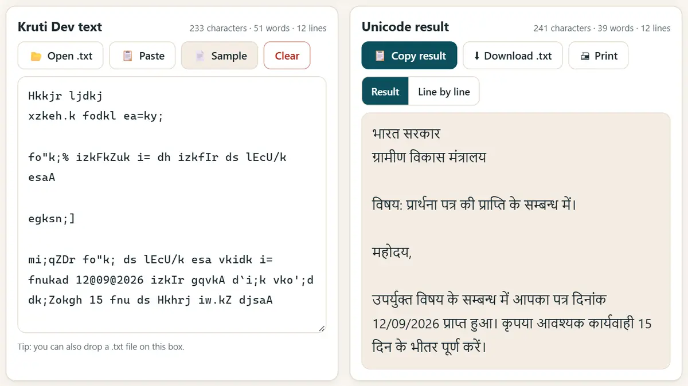
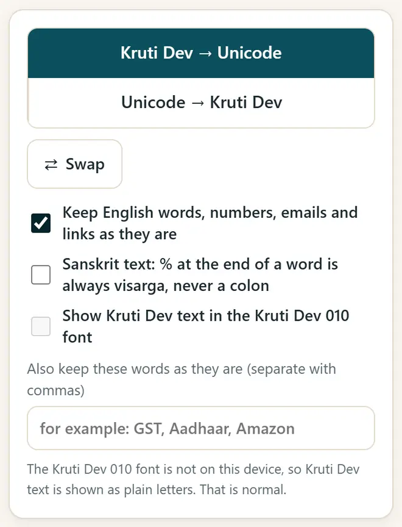

कृतिदेव युनिकोडमध्ये कसे बदलायचे (आणि परत)
जुन्या कृतिदेव फाइल्स फोन आणि वेबसाइटवर “fd;k” सारख्या दिसतात, कारण हा फॉन्ट इंग्रजी अक्षरांवर फक्त देवनागरीचा आकार काढतो. युनिकोडमध्ये बदलताच तो खरा मराठी/हिंदी मजकूर होतो, जो WhatsApp, Google Docs, ईमेल आणि सर्चमध्ये चालतो.
थोडक्यात उत्तर
कृतिदेव - युनिकोड कन्व्हर्टर उघडा, “कृतिदेव → युनिकोड” तसेच ठेवा आणि तुमचा कृतिदेव मजकूर पेस्ट करा. युनिकोड मजकूर लगेच येतो: “निकाल कॉपी करा” किंवा “.txt डाउनलोड” दाबा. एखाद्या ऑफिसला किंवा प्रेसला कृतिदेव हवा असल्यास “युनिकोड → कृतिदेव” निवडा.
5 पायऱ्यांत कृतिदेव ते युनिकोड
-
कृतिदेव मजकूर कॉपी करा
तुमची जुनी Word किंवा PageMaker फाइल उघडा, मजकूर सिलेक्ट (Ctrl+A) आणि कॉपी (Ctrl+C) करा. लांब .txt फाइल असल्यास ती थेट कन्व्हर्टरमध्ये उघडू शकता.
-
कन्व्हर्टर उघडा
कृतिदेव - युनिकोड कन्व्हर्टर उघडा आणि “कृतिदेव → युनिकोड” निवडलेले आहे ना ते पाहा. आधी उदाहरण पाहायचे असल्यास “नमुना” दाबा.
-
मजकूर पेस्ट करा
मजकुराच्या बॉक्समध्ये पेस्ट करा. युनिकोड निकाल लगेच दिसतो. लाल खुणा अशा अक्षरांवर असतात जी बदलता आली नाहीत आणि हाताने तपासायची आहेत.

कृतिदेव मजकूर टाका, टाइप करतानाच युनिकोड मजकूर मिळवा. -
इंग्रजी शब्द आहेत तसेच ठेवा
तुमच्या पत्रात मराठीसोबत इंग्रजीत नावे, ईमेल किंवा फाइल क्रमांक असतील, तर “इंग्रजी शब्द, नंबर, ईमेल आणि लिंक जशाच्या तशा ठेवा” चालू करा, म्हणजे ते भाग बदलणार नाहीत.

पर्याय: इंग्रजी शब्द, क्रमांक आणि लिंक आहेत तसेच ठेवा. -
निकाल कॉपी किंवा डाउनलोड करा
“निकाल कॉपी करा” दाबून कुठेही पेस्ट करा, किंवा “.txt डाउनलोड” दाबा. Word मध्ये मंगल (Mangal), Nirmala UI किंवा Noto Sans Devanagari सारखा युनिकोड फॉन्ट वापरा.
कृतिदेव आणि युनिकोडमध्ये फरक काय?
- कृतिदेव 010 हा जुना फॉन्ट आहे: संगणक इंग्रजी अक्षरे (fd;k) सेव्ह करतो आणि फॉन्ट ती देवनागरीत (किया) दाखवतो.
- युनिकोड (मंगल, Nirmala UI, Noto) खरी देवनागरी अक्षरे सेव्ह करतो, म्हणून प्रत्येक फोन, वेबसाइट आणि सर्च इंजिन ती वाचू शकते.
- अनेक कार्यालये, न्यायालये आणि टायपिंग परीक्षा अजूनही कृतिदेव वापरतात, म्हणून कन्व्हर्टर उलटही चालतो: “युनिकोड → कृतिदेव”.
- कृतिदेव 011, 016, 055 आणि DevLys 010 मध्येही कृतिदेव 010 सारख्याच कळा आहेत, म्हणून तेही असेच बदलतात.
नवे मोफत टूल्स आणि हिंदीत AI चे धडे मिळवा
आमच्या ईमेल लिस्टमध्ये सामील व्हा: नवीन मोफत ॲप्स, नवीन मार्गदर्शिका आणि AI वरील हिंदी व्हिडिओ धड्यांची माहिती मिळत राहील. स्पॅम नाही.
फक्त प्रौढांसाठी (18+). तुम्ही कधीही नाव काढून घेऊ शकता.
आम्ही हे टूल्स का सुचवतो
- सर्वांसाठी मोफत: जाहिराती नाहीत, साइन-अप नाही, पेड प्लॅन नाही.
- खाजगी: तुमच्या फाइल्स आणि माहिती तुमच्याच डिव्हाइसवर राहते.
- फोन, लॅपटॉप किंवा स्मार्टबोर्डवर चालतात, आणि एकदा उघडल्यावर इंटरनेटशिवायही.
- मराठी आणि हिंदीसह 12 भाषांमध्ये.
व्हिडिओतून शिकायला आवडतं? आमच्या YouTube चॅनेलवर AI आणि मोफत टूल्सचे हिंदी धडे पाहा.
वारंवार विचारले जाणारे प्रश्न
कृतिदेव मंगल फॉन्टमध्ये कसे बदलायचे?
मंगल हा युनिकोड फॉन्ट आहे. मजकूर कृतिदेवमधून युनिकोडमध्ये बदला, Word मध्ये पेस्ट करा आणि फॉन्ट मंगल किंवा Nirmala UI ठेवा.
हे मराठी आणि संस्कृतसाठीही चालते का?
हो. ते ळ सारखी मराठी अक्षरेही बदलते, आणि त्यात संस्कृतचा पर्याय आहे, ज्यात शब्दाच्या शेवटचा % नेहमी विसर्ग (ः) होतो.
माझा मजकूर सुरक्षित आहे का?
हो. बदल तुमच्या डिव्हाइसवरच होतो. काहीही अपलोड होत नाही, म्हणून कायदेशीर, न्यायालयीन आणि सरकारी मसुद्यांसाठी हे सुरक्षित आहे.
काही अक्षरे लाल का राहतात?
ती कृतिदेव 010 कीबोर्डचा भाग नाहीत; बहुतेकदा ती चाणक्यसारख्या दुसऱ्या फॉन्टमधून किंवा खराब फाइलमधून येतात. ती हाताने दुरुस्त करा.
युनिकोड परत कृतिदेवमध्ये बदलता येतो का?
हो. “युनिकोड → कृतिदेव” निवडा, मजकूर पेस्ट करा, निकाल कॉपी करा आणि Word, PageMaker किंवा CorelDRAW मध्ये फॉन्ट Kruti Dev 010 ठेवा.
उपयोगी वाटली?
मित्राला, सहकाऱ्यांना किंवा तुमच्या शाळेच्या WhatsApp ग्रुपमध्ये पाठवा.